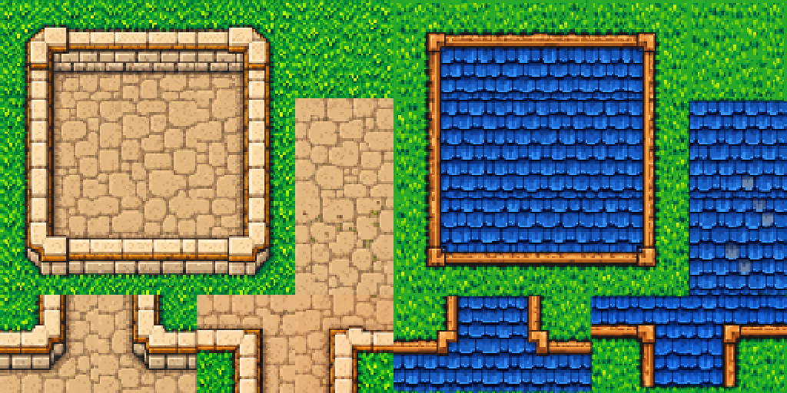
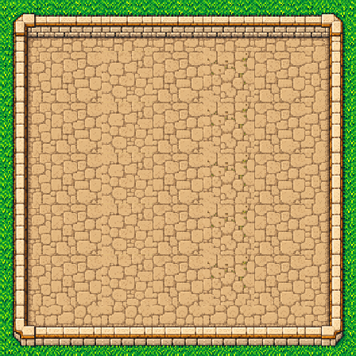
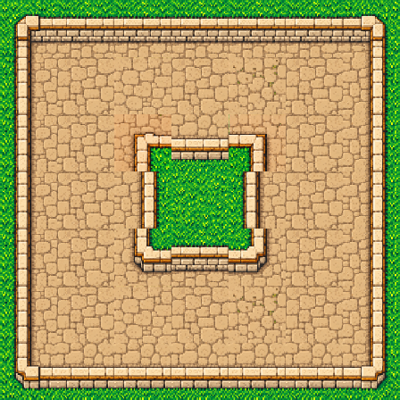
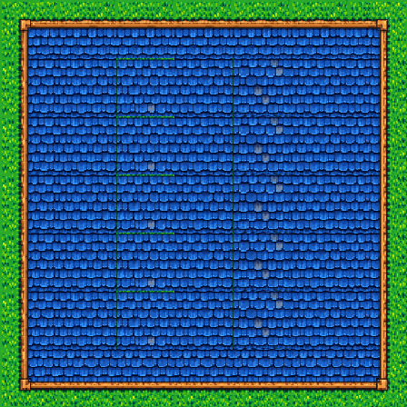
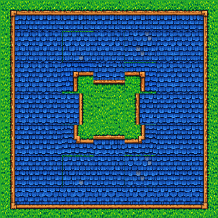

Stone walls and blue slate roofs: outer corners, straight edges, fills, and four inner corners each. Actual native exports; no painted-over seams.
Browse edge tags and compatible neighbors · Inventory and map placements





Texture phase and wall offsets can remain visible. Edge sockets describe logical compatibility, not pixel-perfect seams. Unity import and runtime remain unverified.